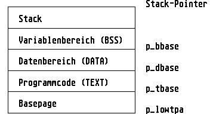

Zu Beginn eines Programms ist es sehr wichtig überflüssigen Speicher per Mshrink an das Betriebssystem zurückzugeben, da anderenfalls kein Speicherplatz mehr für andere Prozesse zur Verfügung steht.
Ein Compiler übernimmt diese Aufgabe normalerweise automatisch; als Assembler-Programmierer muss man diese Prozedur jedoch selbst durchführen. Die entsprechende Routine könnte wie folgt aussehen:
.text
move.l 4(sp),a0 ; Zeiger auf BASEPAGE
lea mystack,sp ; Stack-Pointer setzen
move.l #$100,d0 ; Länge der Basepage
add.l $c(a0),d0 ; Länge des Text-Segments
add.l $14(a0),d0 ; Länge des Data-Segments
add.l $1c(a0),d0 ; Länge des BSS-Segments
move.l d0,-(sp) ; Ergebnis auf dem Stack
move.l a0,-(sp) ; Basepage-Adresse auf Stack
clr.w -(sp) ; Füllparameter
move.w #$4a,-(sp) ; Mshrink
trap #1 ; GEMDOS aufrufen
lea $c(sp),sp ; Stack korrigieren
jsr main ; Hauptprogramm aufrufen
move.w d0,-(sp) ; Return-Wert des Programms
move.w #$4c,-(sp) ; Pterm
trap #1 ; GEMDOS aufrufen
.bss
.ds.l 2000 ; 8000 Bytes Stack
mystack: .ds.l 2
Im Klartext: Der benötigte Speicherplatzbedarf wird errechnet, indem die Länge der Basepage, des Text-, Data- und BSS-Segments sowie ggfs. des Stacks aufaddiert werden. Alle notwendigen Angaben befinden sich in der Basepage, deren Adresse als Parameter auf dem Stack (4(sp)) mitgeteilt wird. Der errechnete Wert ist dann die Anzahl der Bytes, auf die die TPA (Transient Program Area, Speicherbereich eines Programms) geschrumpft werden kann.
Nach Ausführung dieser Prozedur besitzt die TPA eines Programms dann die folgende Gestalt:

Der so freigegebene Speicherplatz kann nun vom GEMDOS für andere Zwecke genutzt werden: etwa zum Starten weiterer Programme, oder um Speicheranforderungen per Malloc bzw. Mxalloc zu befriedigen.
Auch bei einem TSR-Programm (Terminate and Stay Resident) kann der benötigte Speicherplatz nach der oben angegebenen Methode berechnet werden; der einzige Unterschied ist, daß Programme dieser Art sich nicht per Pterm sondern per Ptermres beenden, und sich dadurch resident im Speicher verankern.
Querverweis: BASEPAGE Speicherverwaltung